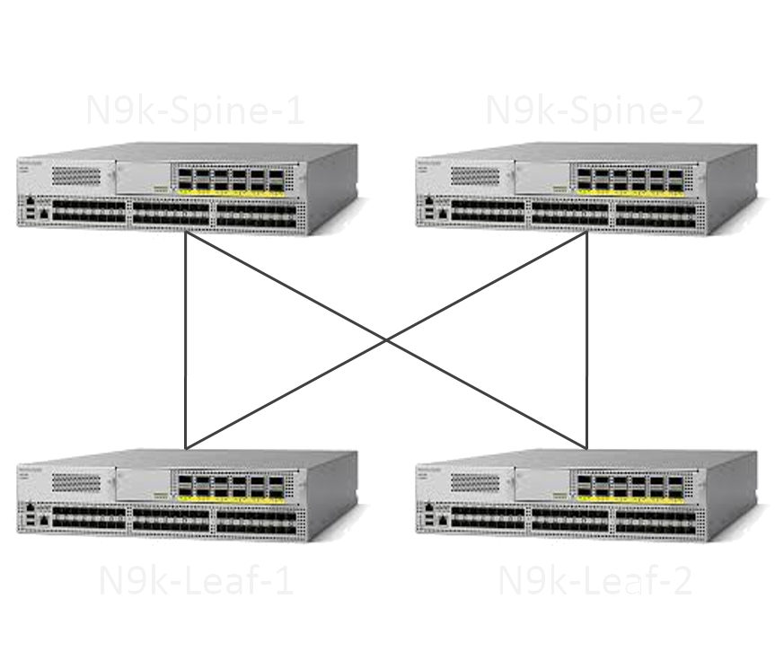

Automating Nexus 9000 Deployment
Generate CLI configurations for repetitive tasks by selecting a configuration type, inputing your configuration variables (or use the ones provided based on Cisco best practices) to generate CLI configurations.

Configurations
Once you have generated the CLI, you can either take the generated configuration files and copy/paste them onto your respective spine/leaf switches or convert them to NX-API/Ansible/Puppet in the step below.
Unzip the generated CLI and upload an individual .txt file.
Convert the CLI Command's text file to NXAPI OFF-Box python script.
Convert the CLI Command's text file to Puppet manifest.
Convert the CLI Command's text file to Ansible Playbook.